AI生成
人物、世界观、伏笔、时间线——都是可被 AI 读取的创作资产。每次生成，自动组装正确的上下文。
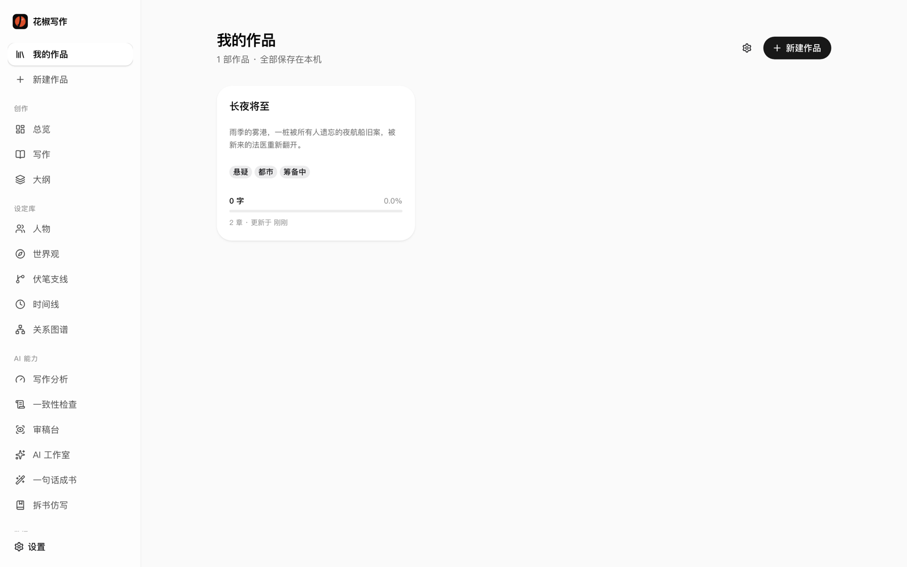
本地优先：稿件存在你的浏览器里，随时全量备份。
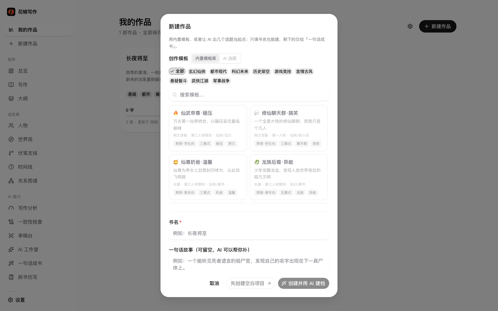
题材、基调、篇幅一次定清；AI 可推荐选题方向。
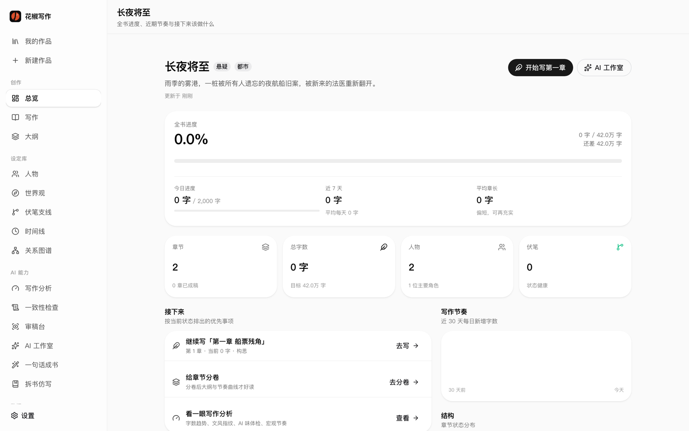
创作驾驶舱让你知道现在写到哪、还差多少。
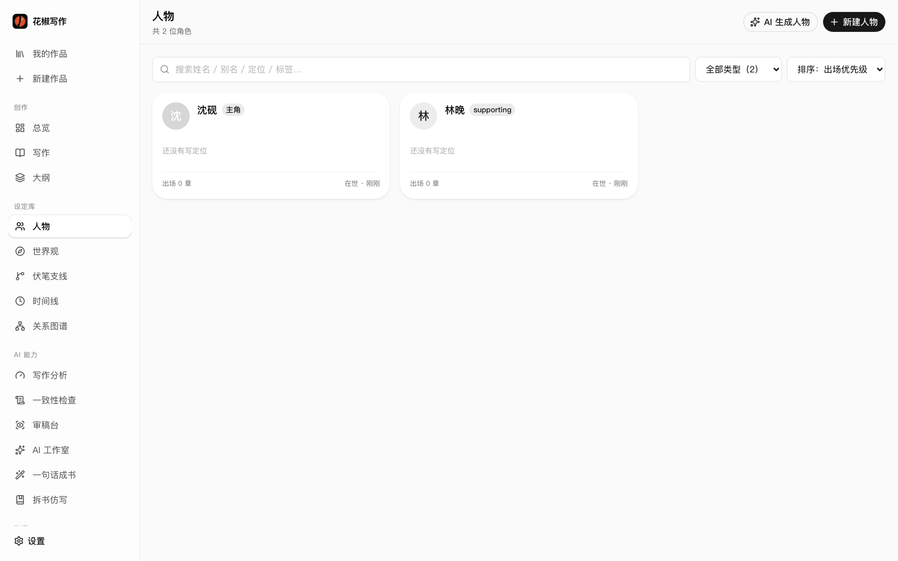
小传、目标、性格弧光落成卡片——AI 写对白时真正「认识」他们。
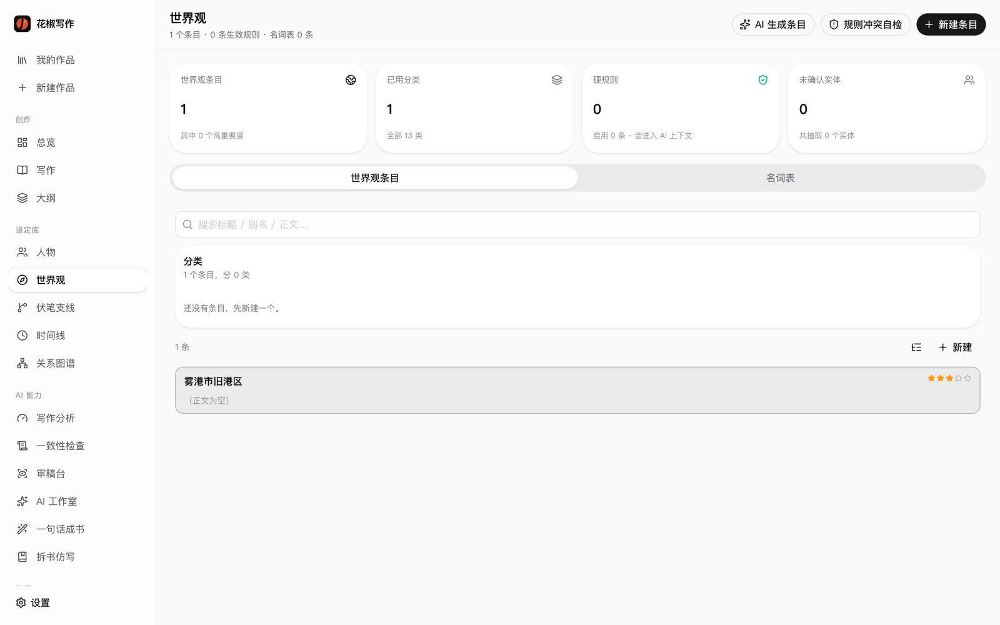
地理、规则、时代、组织——长篇不再写崩设定。
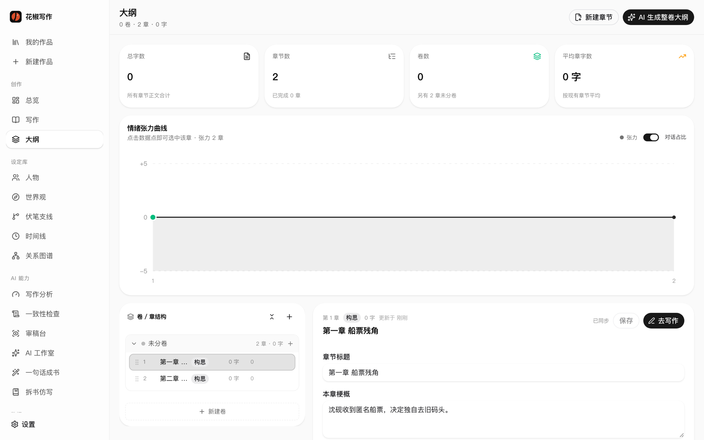
大纲可拖拽调整；每一章都挂得上上下文与目标。
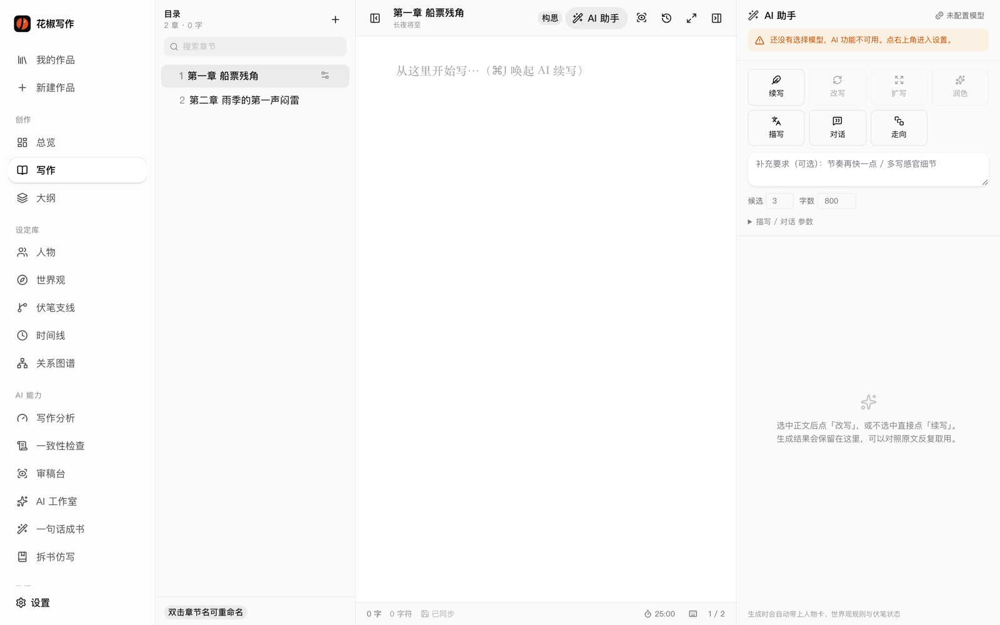
本次上下文来源可追溯——人物近况、未收伏笔、上一章结尾、文风样本。
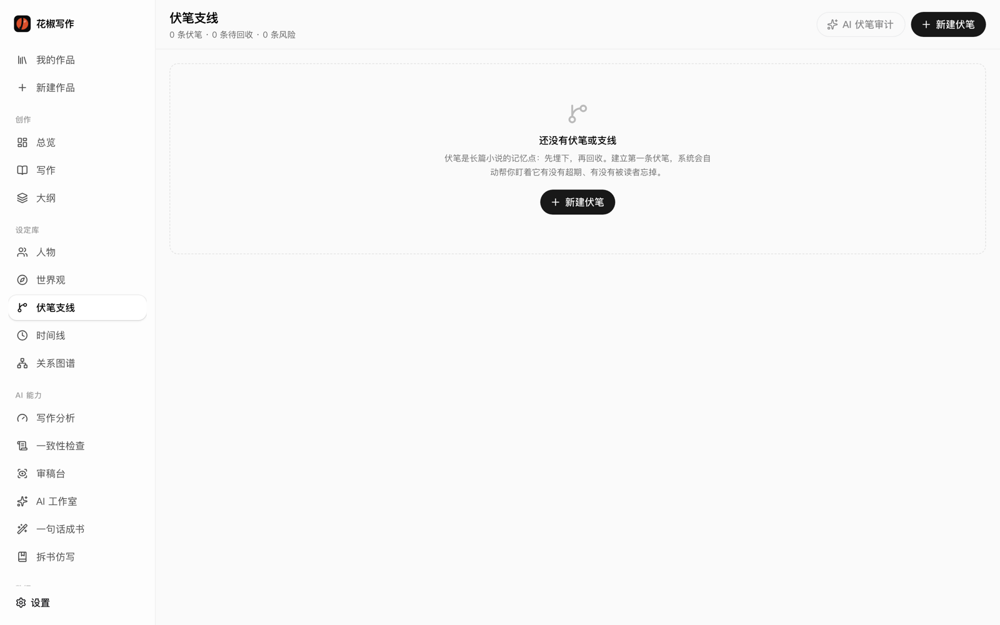
再长的故事，也不会把那把伞忘在第 3 章。
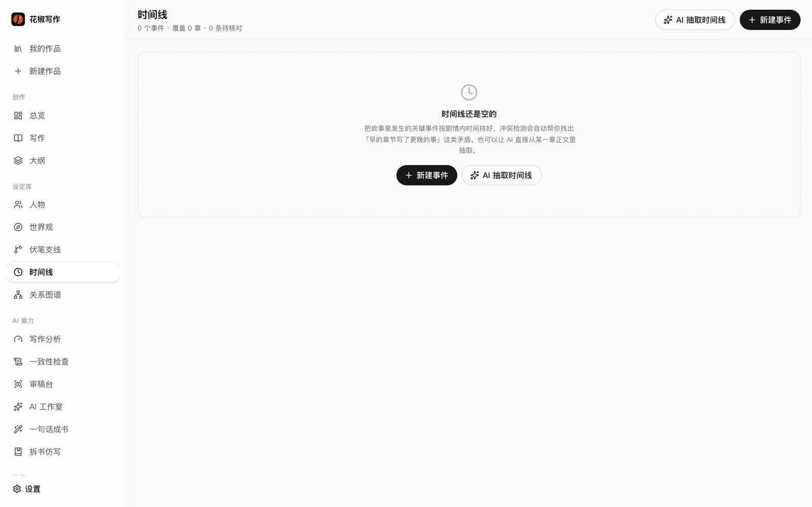
事件排序、因果、跨度——巡检帮你抓「穿帮」。
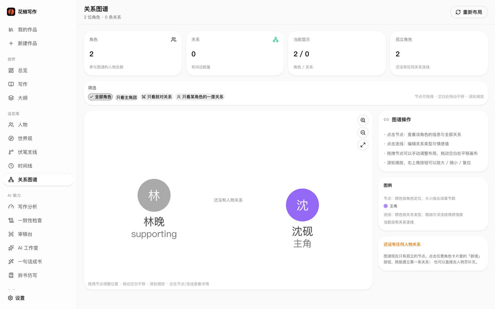
势力、亲疏、隐秘关联，一眼看清。
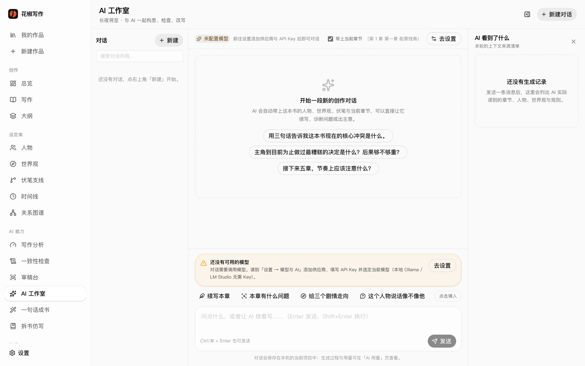
DeepSeek / Kimi / 本地 Ollama……任务各走各的路。
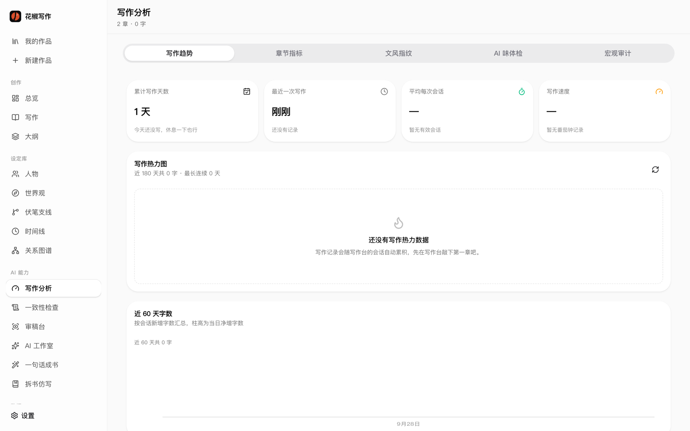
知道自己写成什么样，才能稳定地写下去。
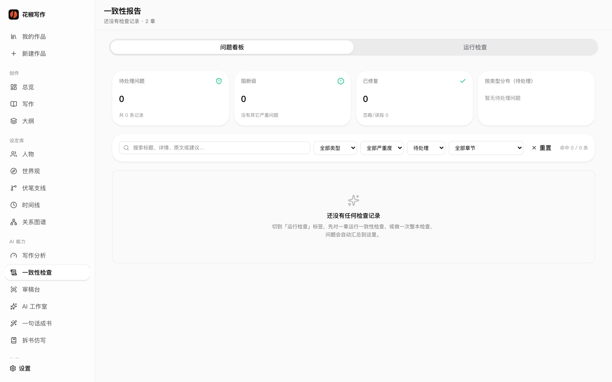
性格漂移、设定打架、漏收伏笔——点开就能改。
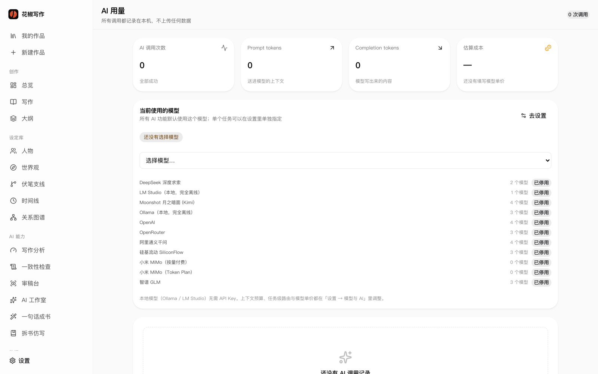
来源可审计，成本不神秘。
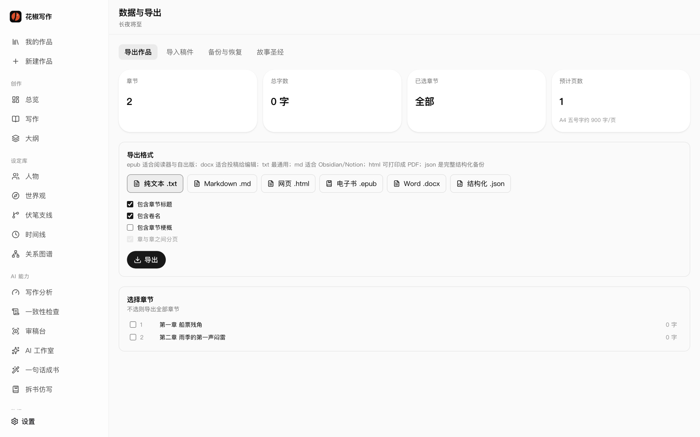
规范级 EPUB 3 · 投稿 DOCX · JSON 全量备份。
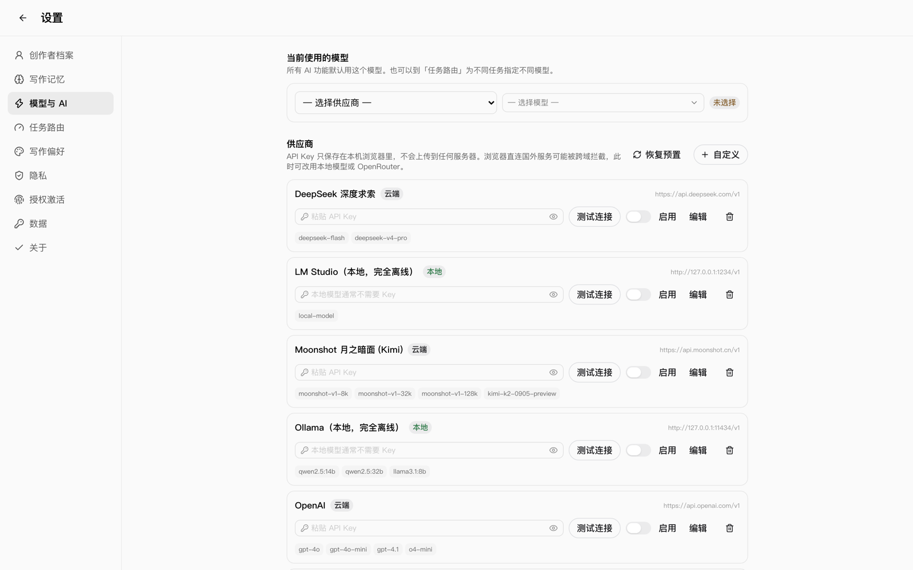
云端可关闭，本地可离线。数据默认不出本机。
约 2 分钟的界面漫步。
点击播放后将开始场景轮播，并播放合成背景音乐。